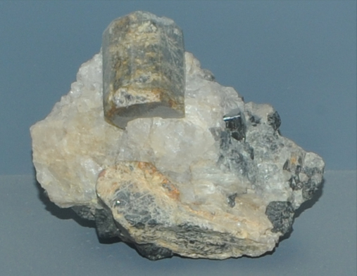

|

| Mg2Al4Si5O18
These samples of cordierite are displayed in the Smithsonian Museum of Natural History. Cordierite is a silicate mineral with the composition Mg2Al4Si5O18. The sample at left is about 8 cm across and is from Kragero, Telemark, Norway.
|